O Início e os Divinos
Há séculos, o vasto continente era consumido por guerras incessantes. Cada raça buscava apenas sua própria sobrevivência, e a luta pelo poder fazia reinos nascerem e caírem com alarmante frequência.
Nesse cenário de caos, surgiu uma fagulha de esperança. O velho Gildor, líder dos elfos, encontrou um templo perdido nas profundezas do oceano. Dentro desse lugar sagrado, descobriu monólitos enigmáticos que contavam histórias sobre o Sol e a Lua, entidades que mais tarde seriam conhecidas como os Divinos. A notícia se espalhou rapidamente pelo continente, alcançando todos os cantos. Inspirados por esses relatos, os humanos fundaram a Igreja do Sol, que rapidamente ganhou força. Pregando com fervor e autoritarismo, afirmavam que o Sol era a personificação do bem supremo e que a Lua era a fonte de todo mal. Essa interpretação trouxe equilíbrio à sociedade e garantiu à Igreja do Sol uma fé imensa e inquestionável.
Contudo, Gildor sabia que a história dos humanos era uma distorção da verdade. Os monólitos não descreviam o Sol e a Lua como opostos em guerra, mas como forças complementares, igualmente necessárias para a harmonia do mundo. Infelizmente, a Igreja do Sol já havia cegado a maioria com suas doutrinas e a promessa de luz eterna.
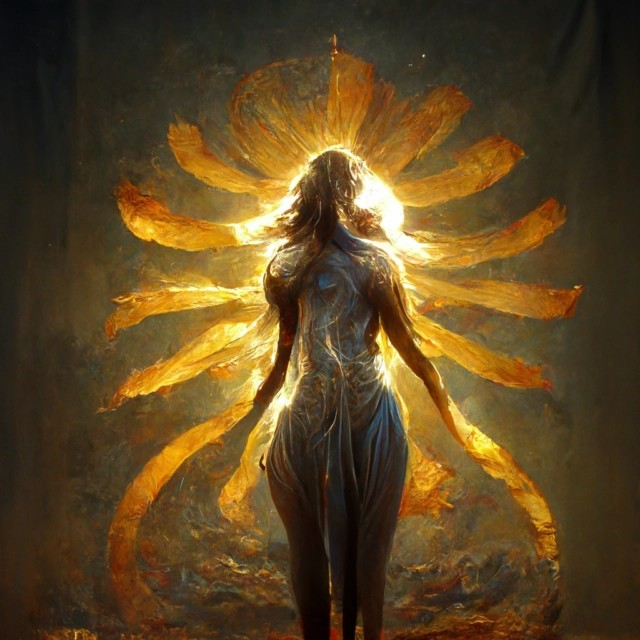
Divino Sol
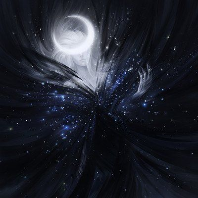
Divino Lua
Algumas noites depois, Gildor teve um sonho perturbador. Ele se viu em um espaço vazio e sombrio, sem fim à vista. Enquanto caminhava naquele vazio, ouvia sussurros ao longe. As vozes eram incompreensíveis, mas carregavam um peso ancestral, como se fossem as próprias memórias do mundo. De repente, um som cortante o fez virar. Na escuridão, olhos lilases surgiram, flutuando como estrelas, mas emanando uma presença esmagadora.
De dentro da escuridão, uma voz ecoou, fria e cortante, preenchendo todo o vazio ao seu redor. Durante o que parecia ser horas, Gildor dialogou com aquela entidade misteriosa. O tom das palavras era hipnotizante, e, ao final da conversa, o velho elfo aceitou um pacto. Assim que o acordo foi selado, a escuridão se dissipou, revelando em seu lugar uma pedra cintilante. Ela parecia pulsar com uma energia indescritível. Ao tocar a pedra, Gildor sentiu uma força imensa e avassaladora o preencher. Sua mana transbordou de maneira que jamais havia experimentado antes, mas junto com essa energia veio algo sombrio e insidioso. Ele sentiu um peso crescer dentro de si, uma sensação de algo o consumindo lenta e profundamente. Sua alma parecia se entrelaçar com aquela força, mas ele não podia discernir se era uma bênção ou uma maldição. Uma corrupção silenciosa começava a enraizar-se em seu coração, ainda imperceptível ao próprio Gildor. E então ele despertou.
Um ano depois, boatos começaram a circular novamente sobre os Divinos. Esse período viu o surgimento de duas facções rivais, formadas por diferentes interpretações das escrituras dos monólitos. Em Celestia, a Igreja do Sol crescia em influência com a facção Solarus, fervorosa na adoração do Divino do Sol. No Grande Bosque, contudo, os elfos formaram a Ordo Magis, dedicada à Lua e ao uso de magia para compreender os mistérios do mundo. Ambos os grupos influenciaram diversas raças, levando um número crescente de povos a aprenderem os segredos da magia e dos encantamentos.
Entretanto, no coração do continente, a Cidadela permaneceu neutra. Para aqueles que preferiam as armas à magia, a facção IronFist foi fundada. Essa guilda se dedicava à maestria no uso de armas tradicionais, como espadas, martelos e machados, priorizando a força física sobre o poder místico. A neutralidade da Cidadela, no entanto, escondia um segredo: os anões, governantes desse reino, iniciaram discretamente expedições para explorar novas minas, pois os recursos de sua montanha estavam se esgotando rapidamente.
Enquanto isso, Gildor, guiado por visões e pelos fragmentos de conhecimento adquiridos em seus sonhos, liderava a Ordo Magis em um projeto grandioso. Após anos de estudo, o elfo conseguiu desvendar o segredo de um poder antigo: a criação de portais que conectavam diferentes pontos do espaço. Esse avanço se tornou a maior vantagem da Ordo Magis sobre seus rivais. O projeto culminou na construção de um monumento colossal chamado Caixa de Vácuo, uma estrutura de runas gravadas e pedras lapidadas, energizada pela misteriosa pedra dos sonhos. Esse artefato permitia que qualquer pessoa viajasse por longas distâncias em questão de segundos, rompendo as barreiras do espaço.
Vinte anos depois, o continente estava profundamente transformado. Celestia, com sua força política e militar, prosperava às custas do trabalho escravo. Orcs do deserto forneciam elfos e anões como mercadoria em troca de ouro ou humanos hereges. O reino humano havia se tornado o mais poderoso de todos, devido a sua aliança com os orcs. Enquanto isso, os anões da Cidadela, mantendo sua neutralidade, concentravam seus esforços na busca por novas minas em terras distantes, tentando suprir a escassez de ferro.
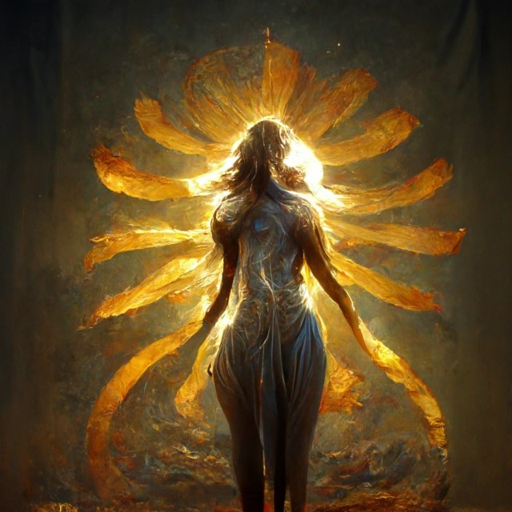
Divino Sol
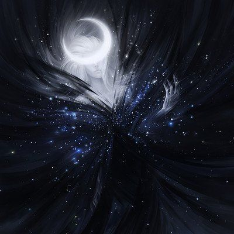
Divino Lua
A Caixa de Vácuo
Cinco anos depois, relatos sobre o desaparecimento de alguns elfos durante as viagens pela Caixa de Vácuo começaram a surgir. Apesar do mistério em torno desses desaparecimentos, os elfos decidiram manter tudo em segredo, evitando alarmar outras raças ou facções. Foi nesse mesmo período que uma criatura estranha, com asas cintilantes, apareceu. Essas criaturas se autodenominaram Fadas, explicando que haviam vindo de outro plano por meio de algo que chamavam de Véu. As Fadas contaram que alguns elfos, ao atravessarem a Caixa de Vácuo, acabaram indo parar em seu plano. Lá, ensinaram as Fadas a falar e escrever no idioma comum do continente. As criaturas revelaram que o tempo em seu plano fluía de maneira diferente, o que fazia com que muitos dos que chegavam lá morressem antes de encontrar uma maneira de voltar. Além disso, elas alertaram que a Caixa de Vácuo parecia estar conectada a outros planos, algo que poderia representar um enorme perigo. Depois de extensas negociações, os elfos e as Fadas chegaram a um acordo: as Fadas poderiam viver no Grande Bosque em troca de ajuda com o estudo e controle da Caixa de Vácuo. Assim, os elfos ganharam novos aliados, e a relação entre as duas raças floresceu em meio ao crescente poder do reino élfico.
Enquanto isso, em Celestia, rumores sobre o crescimento do poder dos elfos e a chegada de novos habitantes ao Grande Bosque se espalharam rapidamente. Desconfiados, os humanos enviaram espiões para investigar. Um desses espiões conseguiu localizar a Caixa de Vácuo, mas não sabia exatamente o que era. Curioso, aproximou-se da estrutura. O objeto mágico brilhava intensamente, com dois metros de altura e símbolos místicos gravados em sua superfície. Quando finalmente encostou na Caixa, o espião humano foi consumido por uma escuridão repentina. Tudo ao seu redor mudou. Agora, ele estava em um lugar estranho, desolado, repleto de esqueletos espalhados pelo chão e vozes que sussurravam sem parar. De repente, uma sombra com olhos brilhantes surgiu das trevas. A entidade ofereceu ajuda para tirá-lo daquele lugar, mas em troca exigia que ele a levasse consigo para o continente. Desesperado para sobreviver, o humano aceitou a oferta, selando um pacto com a Sombra ao cortar a própria mão e derramar seu sangue. A Sombra, então, lhe entregou uma máscara negra e enigmática. Assim que colocou a máscara, o humano sentiu uma energia incrível fluindo pelo seu corpo, como se algo estivesse rompendo o Véu que separava os mundos.
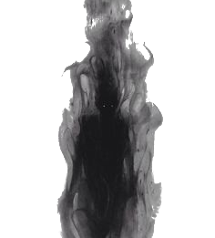
Sombra
No continente, os efeitos foram imediatos. Tremores começaram a sacudir a terra, derrubando casas e destruindo cidades. Ventos furiosos formaram tempestades violentas, e estranhas nuvens carregadas tomaram o céu, trazendo relâmpagos incessantes. Portais começaram a se abrir em diversas partes do continente, enfraquecendo ainda mais o Véu. Criaturas hostis, vindas de outros planos, emergiram desses portais, espalhando caos por todos os reinos. Em Celestia, o tremor foi tão intenso que parte da cidade começou a ser engolida pela areia do deserto. Dos portais abertos, mortos e esqueletos animados começaram a surgir, espalhando terror por toda a região. No Grande Bosque, monstros colossais devastaram aldeias inteiras, forçando as raças a fugir e se esconder. O continente mergulhou no caos, e todas as facções lutavam para sobreviver.
Cinco anos depois da tragédia, um evento que passou a ser chamado de Despertar dos Deuses, o continente mudou drasticamente. O Grande Bosque, agora dividido, passou a abrigar uma grande biblioteca para estudo de magia e um porto dedicado ao comércio de artefatos e itens raros. Esses itens, muitas vezes, eram recuperados por elfos que se aventuravam no Véu, usando seu longo tempo de vida para explorar os mistérios além do plano mortal. Em Celestia, o caos causou a divisão do reino humano em dois. Ao oeste, surgiu um reino que permaneceu fiel ao Divino do Sol, buscando restaurar a antiga glória de Celestia. Ao sul, formou-se um novo reino comandado por Radagon, o Corrompido. Radagon era o mesmo humano que havia atravessado o portal e retornado com a máscara misteriosa.
Após o evento do Despertar dos Deuses, Radagon tentou regressar a Celestia, que começava a se reerguer das ruínas. Contudo, a igreja considerou suas magias profanas e malignas. Ele havia aprendido rituais sombrios com a entidade conhecida como Sombra, incluindo a criação dos Ferais, criaturas híbridas formadas a partir de bebês humanos sacrificados e sangue de feras. Esses rituais horríveis resultavam em seres que combinavam traços humanos e bestiais. Condenado à morte pela igreja, Radagon fugiu, fundando um novo reino ao sul, longe da influência de Celestia. A máscara que ele carregava foi confiscada pela igreja e desde então ela nunca mais foi vista.
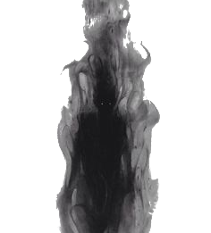
Sombra
As Expedições
Quarenta anos depois, o comércio de escravos Ferais havia se tornado uma prática comum em várias regiões do continente. Essas criaturas eram caçadas como bestas selvagens, tratadas como mercadorias e usadas como moeda de troca. Além disso, eram vendidas para diversas finalidades, desde trabalhos forçados até entretenimento nos combates sangrentos das arenas. As constantes expedições pelo continente revelaram a existência de novas criaturas espalhadas por diferentes áreas. Ao norte, dominando as terras vulcânicas, surgiram Ferais meio-dragões, criaturas poderosas e temidas por sua força e habilidade mágica. Nas densas florestas, alguns Ferais se escondiam, tentando escapar das redes de caçadores. Já na fronteira das terras gélidas, seres conhecidos como Infernais haviam estabelecido seu próprio reino, chamado Mors, desenvolvendo uma cultura única que os diferenciava de outras raças.
Volektra, a temida rainha dos meio-dragões, era conhecida não apenas por sua ferocidade, mas também por suas habilidades com magia corrompida. Durante sua juventude, ela havia sido aprendiz de Radagon, o Corrompido, que lhe ensinara segredos proibidos sobre magia e rituais. Com o passar do tempo, Volektra deu à luz um filho, fruto de um relacionamento que havia terminado tragicamente: o pai da criança foi morto em combate nas fronteiras, apenas dois meses antes do nascimento do menino. O amor de Volektra por seu filho era absoluto. Ela não queria que o menino compartilhasse o mesmo destino de seu pai, morrendo em uma guerra sem fim. Por isso, a rainha tomou uma decisão ousada: convocou uma reunião com os chefes do reino de Mors, propondo um acordo. Ela prometeu que encerraria as guerras entre os meio-dragões e os Infernais, retirando suas forças das fronteiras e garantindo paz entre os dois povos. Em troca, os Infernais deveriam garantir a segurança e a proteção de seu único filho, a quem ela havia chamado de Kyza. Os Infernais, liderados por seus sábios e guerreiros, aceitaram o pacto, garantindo abrigo e segurança ao herdeiro da rainha. Assim, Volektra retirou-se para o vulcão, onde permaneceu com seus seguidores, enquanto Kyza crescia sob a proteção do acordo firmado.
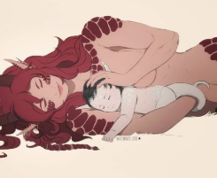
Volektra e Kyza
Kyza, por sua vez, mostrou-se um menino excepcionalmente inteligente e astuto. Desde jovem, destacou-se durante os treinamentos, mas também demonstrava uma curiosidade insaciável pelo mundo. No entanto, ele começou a perceber algo estranho: sentia-se constantemente observado, como se uma presença invisível estivesse sempre por perto. Aos quinze anos, Kyza finalmente teve a chance de sair em sua primeira expedição, uma jornada até a Cidadela. Durante essa aventura, ele conheceu aventureiros e ouviu histórias fascinantes sobre o continente, seus mistérios e perigos. No entanto, a longa viagem o esgotou. Ao retornar para casa, Kyza sentia-se fraco e febril. Enquanto caminhava pelos corredores de sua morada, caiu repentinamente, sangrando pelo nariz e com o corpo fervendo em calor. Preocupados com o estado de Kyza, seus tutores agiram rapidamente. Temendo pela vida do garoto, prepararam-se para levá-lo ao Grande Bosque, onde os mais renomados alquimistas e curandeiros poderiam tentar salvá-lo.
Durante a viagem, a condição de Kyza se agravou. Ele começou a ter pesadelos e alucinações, murmurando coisas incompreensíveis. Dentre os delírios, ele mencionava repetidamente um "grande olho" que o observava. Os tutores, preocupados com os gritos de Kyza, começaram a tomar precauções, acampando em locais escondidos, como cavernas ou entre formações rochosas. Mas na savana, os gritos incessantes do garoto atraíram a atenção de um grupo de Orcs que passava pela área. Essas criaturas altas e brutais atacaram rapidamente, surpreendendo os guardas de Kyza. Em poucos minutos, um dos guardas já estava morto, e os outros, percebendo a desvantagem, largaram suas armas e se renderam. Kyza, foi levado como prisioneiro pelos Orcs. Durante a viagem até a tribo, o jovem meio-dragão foi tratado com brutalidade. Espancado e insultado, ele mal recebia alimento. A sopa rala que lhe ofereciam era intragável e insuficiente para saciar sua fome crescente. Ao chegar à tribo, o líder dos Orcs, Rurik, percebeu imediatamente que aquele prisioneiro valia muito mais do que aparentava. Ele reconheceu em Kyza a linhagem dos meio-dragões e sabia que um jovem como ele poderia render uma fortuna no mercado de escravos. Sem perder tempo, Rurik escreveu uma carta para um cliente rico e influente, oferecendo o garoto em troca de uma grande quantia de dinheiro.
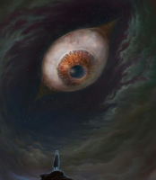
Alucinações
Alguns dias depois, o cliente chegou: Rankle, uma Fada colecionadora. Rankle era conhecida por seu fascínio por várias coisas, objetos raros, pergaminhos antigos, escravos exóticos. Ao avistar Kyza, o interesse foi imediato. Sem hesitar, Rankle entregou uma generosa quantia de moedas à Rurik e com agilidade fez Kyza tomar um líquido verde que estava em um frasco. Satisfeito com a aquisição, partiu levando o garoto em uma carroça.
"Acorde, Kyza, chegamos!" disse Rankle com um tom alegre. Meio atordoado, Kyza abriu os olhos e olhou ao redor. O cenário era impressionante. Ele avistou um grande povoado repleto de vida, onde pequenas casinhas feitas de madeira se entrelaçavam com as raízes das árvores gigantescas que dominavam a paisagem. Barcos ancoravam em um rio próximo, carregando mercadorias e viajantes. Os elfos do Grande Bosque, com suas vestimentas rudimentares feitas de ossos, penas e couro, se moviam entre as árvores como caçadores ágeis. Em contraste, as fadas caminhavam graciosamente, trajando vestidos elaborados e brilhantes que refletiam uma elegância quase sobrenatural. A atmosfera era tão vibrante quanto selvagem. Eles estavam agora no Grande Bosque.
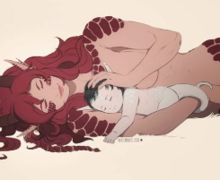
Volektra e Kyza
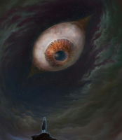
Alucinações
A Árvore Negra
Dois meses haviam se passado. Kyza já estava completamente curado, mas os rumores sobre os véus que surgiam pelo continente cresciam cada vez mais. Ninguém parecia compreender sua origem. Rankle, com sua reputação como mago habilidoso e alquimista renomado, era constantemente requisitado para reuniões e investigações relacionadas a esses fenômenos. Certo dia, um grupo de humanos chegou à cidade, convocando uma reunião urgente com Rankle. Entre eles estava Artorias, o arcebispo de Celestia, que entrou na presença da Fada, enquanto Kyza, obediente em seu papel de escravo, servia vinho. Dois soldados trouxeram consigo uma caixa pesada e a colocaram sobre a mesa. Ao abri-la, revelaram uma máscara. Rankle olhou atentamente para o artefato, e Artorias começou a explicar que haviam tentado destruir a máscara diversas vezes, mas sem sucesso. Intrigado, Rankle pegou o pedaço da máscara e começou a analisá-lo, mas inicialmente não encontrou nada suspeito. Após um momento de reflexão, ele informou ao arcebispo que precisaria levar a máscara até sua cidade natal, através do véu, para realizar um estudo mais aprofundado. Artorias concordou, mas deixou claro que a máscara deveria retornar a Celestia assim que a investigação fosse concluída. Na manhã seguinte, Rankle se preparou para partir, levando Kyza consigo. Juntos, chegaram ao local do véu. A Fada estendeu a mão para o jovem e, segurando-o firmemente, atravessaram o portal.
Quando abriram os olhos, perceberam que algo estava errado. Não estavam na cidade natal de Rankle. Ao contrário, tudo ao seu redor era escuridão, um vazio impenetrável. Sem alternativas, começaram a caminhar, sem enxergar para onde estavam indo. Horas se passaram, e a exaustão finalmente os alcançou. Pararam para descansar, e foi nesse momento que Kyza, ao tocar o chão, sentiu algo estranho: pequenas raízes espalhadas pelo solo. Ele sugeriu que seguissem aquelas raízes. Conforme avançavam, as raízes se tornavam maiores e mais grossas. Depois de algum tempo, chegaram a uma árvore colossal, que parecia rasgar o próprio vazio ao seu redor. Na base da árvore, havia uma rachadura que lembrava a entrada de uma caverna, de onde emanava uma luz fraca e pulsante. Decidiram entrar. Lá dentro, encontraram uma porta gigantesca feita de pedra. Ao se aproximarem, Rankle estendeu a mão para tocar a porta.
No instante em que seus dedos a alcançaram, uma névoa escura começou a se materializar, saindo da rachadura e envolvendo a máscara que Rankle carregava. A névoa tomou a forma de uma criatura, parecia uma sombra. A criatura estendeu a mão em direção ao chão, e um círculo de runas brilhantes apareceu sob seus pés. De repente, Rankle começou a sentir algo estranho dentro de si. Uma dor lacinante percorreu seu corpo. Ao levantar a blusa, viu que sua pele estava começando a escurecer, como se estivesse sendo consumida por algo maligno. As dores intensificaram-se, e ele caiu de joelhos, gritando enquanto ouvia uma voz insidiosa ecoar em sua mente, sussurrando palavras que o levavam à beira da loucura. Kyza também foi afetado. O jovem gritava e chorava, atormentado por visões e memórias de sua vida em Mors. Ele queria voltar para casa, mas as imagens em sua mente o consumiam. Desesperado e buscando alívio para sua dor, Kyza pegou uma lâmina e a pressionou contra sua pele. Ele se cortou, tentando pôr um fim ao sofrimento. No instante em que a primeira gota de sangue tocou o chão, algo impensável aconteceu. Uma fenda se abriu na realidade, rasgando o véu que separava os planos. Dessa fenda, uma árvore gigantesca e negra surgiu em Mors, suas raízes se espalharam rapidamente pela terra destruindo algumas casas.
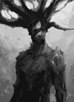
Sombra
Nos últimos anos, Radagon havia reunido milhares de seguidores leais que compartilhavam sua visão e obedeciam sem questionar. Eles usavam trajes característicos, que incluíam máscaras que ocultavam suas identidades, tornando-os praticamente irreconhecíveis. Autodenominavam-se “Sombras” e carregavam no braço uma marca visível, gravada após o ritual de iniciação, que simbolizava sua devoção e lealdade absoluta ao seu líder. Quando a árvore negra emergiu em Mors, alguns desses seguidores estavam próximos ao local e foram os primeiros a chegar às raízes. Lá, avistaram uma Fada caída, inconsciente, com um objeto estranho em sua mão. Sem hesitar, pegaram o objeto e fugiram antes que os guardas de Mors pudessem alcançá-los. Os guardas chegaram logo depois e encontraram a Fada desmaiada. Ao despertá-la, questionaram o que havia acontecido. Rankle da um breve relato e sem perder tempo, pegou um cavalo emprestado e partiu de volta ao Grande Bosque, decidido a reportar tudo o que presenciou ao seu líder, Gildor.
Ao chegar ao Grande Bosque, Rankle correu até a sala de reuniões, onde encontrou Gildor, então relatou o que havia ocorrido em Mors, descrevendo a árvore, a névoa, as dores que sentiu e o que viu antes de perder a consciência. Gildor ouviu atentamente, com o semblante sério, enquanto os detalhes da história reforçavam suas suspeitas sobre os véus e as forças que estavam por trás dos últimos acontecimentos. Enquanto os dias passavam, a situação em Mors se agravava. Esqueletos e mortos-vivos começaram a surgir, perambulando pela terra cada vez mais escura e corrompida. A presença da árvore negra parecia acelerar o processo de deterioração, espalhando sua influência sinistra por quilômetros ao redor. Ciente de que precisava agir, Gildor decidiu tomar uma atitude. Ele recolheu algumas relíquias que havia acumulado ao longo dos anos e se preparou para partir para Mors. Antes de sair, deixou um pergaminho sobre sua mesa, contendo relatos detalhados de suas experiências e descobertas ao longo da vida.
Ao chegar em Mors, Gildor foi direto até a árvore negra. Usando a pedra dos sonhos, ele canalizou sua energia para abrir um portal bem abaixo da árvore. Sem hesitação, atravessou o portal e desapareceu. No exato momento em que Gildor desapareceu, algo estranho começou a acontecer em todo o continente. Diversas pessoas desmaiaram repentinamente, caindo em um coma profundo que durou exatos seis dias. Quando finalmente despertaram, todas relataram experiências semelhantes. Diziam que haviam estado presas em um lugar escuro, cheio de fantasmas e visões aterrorizantes. Também mencionaram uma sombra que conversava com elas. Embora as descrições fossem vagas, muitos dos que despertaram mencionaram locais específicos que haviam visto durante o coma: laboratórios abandonados, ruínas cobertas por trepadeiras e um templo colossal. No entanto, ninguém sabia onde esses lugares estavam ou se sequer existiam no continente. Eram visões de um mundo que nenhum deles reconhecia, um mundo que parecia existir além do véu.
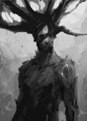
Sombra
Relatos de Gildor
As Facções
Dez anos se passaram, e o outrora próspero povoado de Celestia estava agora em ruínas. Pobre e faminta, a cidade que já foi o coração do poder humano estava à beira do colapso. As minas de prata e ouro, que antes garantiam sua riqueza, estavam esvaziadas e abandonadas, alimentando rumores sobre uma maldição causada por atos esquecidos do passado. A igreja, que ainda exercia grande influência, havia banido diversas práticas mágicas, culpando-as pelos ataques de demônios que se tornaram cada vez mais frequentes na região. Os reinos ao norte, se recusavam a oferecer ajuda a Celestia, considerando os problemas dos humanos como consequência de suas próprias ações. Apenas os elfos continuavam enviando suprimentos, movidos não por altruísmo, mas pelo temor de que, se Celestia caísse, seriam os próximos a enfrentar o caos que emergia.
“Tudo que eles querem é sangue, o povo parece ter esquecido o passado, cada vez está se corrompendo mais e mais. Estamos perdidos se tudo continuar assim.”
– Artorias, Arcebispo de Celestia.
Enquanto isso, nas matas habitadas pelas fadas, a Ordo Magis passava por um período de grande mudança. Elemmírë Peredhel havia sido nomeada líder da facção, assumindo o papel de restaurar a ordem e a influência da Ordo em um continente cada vez mais dividido e ameaçado pelos rasgos no Véu. Sob sua liderança, Aghell Greyll, um meio-dragão, e Sooki começaram a implementar um ambicioso plano que envolvia tanto o avanço em pesquisas quanto a proteção de locais afetados pelo Véu, como a Cidadela. Porém, a presença de Aghell era motivo de desconfiança entre os veteranos da Ordo, que viam sua natureza meio-dragônica como um fator de risco. Ainda assim, sua ajuda financeira foi crucial para que a facção recuperasse sua força, permitindo a aquisição de relíquias e o financiamento de missões vitais. Apesar do retorno temporário de sua glória, o futuro da Ordo Magis era incerto.
A Caixa de Vácuo, um símbolo de orgulho e conquista para a Ordo, começou a apresentar falhas. Os portais, antes controlados, passaram a se conectar a locais desconhecidos e perigosos. Em particular, eles abriram passagem para uma raça demoníaca de pele azulada, com uma tonalidade que lembrava o oceano profundo. Esses infernais trouxeram caos e destruição, dando início a uma guerra entre magos e demônios que durou três anos. Durante o conflito, reviravoltas inesperadas abalaram a Ordo Magis. Uma das mais impactantes foi o misterioso desaparecimento de Elemmírë Peredhel, deixando a liderança da facção sem rumo em um momento crítico. Após o término da guerra contra os infernais, os membros da sociedade do Grande Bosque se reuniram para eleger uma nova liderança. Depois de intensas discussões, Sooki foi escolhida como a nova comandante da Ordo, enquanto Aghell, apesar das controvérsias, foi nomeado conselheiro devido às suas contribuições financeiras e estratégicas. Agora, com Sooki e Aghell no comando, a Ordo Magis tinha diante de si o desafio de restaurar sua antiga glória em um mundo que parecia cada vez mais à beira de uma ruína irreversível.
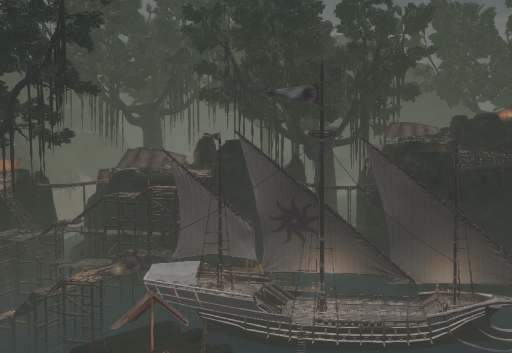
Grande Bosque
No deserto abrasante, a morte de Artorias, o velho arcebispo de Celestia, desencadeou uma violenta guerra civil. Enquanto o caos se espalhava, o povo fugia em massa da cidade, buscando abrigo em outras regiões mais seguras. Em meio ao colapso, a Legião da Alvorada, na tentativa de manter algum controle, tomou o poder e passou a governar as terras do Sol com mão de ferro. Grupos e etnias que viviam afastados da capital foram forçadamente reunidos dentro da cidade, na esperança de fortalecer a comunidade. Essa concentração populacional não apenas ajudou na disseminação do Culto do Sol, que pregava os ensinamentos do Deus Dourado, mas também criou terreno fértil para a rápida circulação dos recém-descobertos escritos de Gildor Magis, o lendário fundador da Ordo Magis. Entre os escritos, uma revelação abalou os alicerces de Celestia: a temida Cidade Corrompida, um lugar evitado por todos devido aos rumores sobre os mortos-vivos que a habitavam, era, na verdade, a Velha Celestia — a antiga metrópole que fora destruída e consumida pelo deserto. Além disso, rumores sobre sombras que vagavam pelo deserto começaram a surgir, e o nome de Radagon passou a ser sussurrado com medo e desconfiança. Ele e seu exército estavam constantemente em busca de relíquias e segredos escondidos nas dunas, mas ninguém sabia ao certo como encontrá-lo. Com um governo descentralizado, dividido entre líderes tirânicos em disputa pelo poder, e a ameaça de forças obscuras cada vez mais presentes, Celestia estava à beira de um colapso.
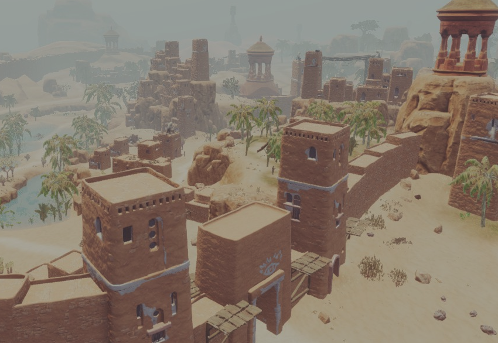
Celestia
Nas campinas nortenhas, rasgos no Véu tornaram-se frequentes, espalhando o caos pela região. Com a crescente instabilidade, diziam que o antigo Rei Anão havia abandonado seu trono, deixando Vincent, um líder mercenário, como o novo governante da Cidadela. Embora os rumores sobre a fuga do rei permanecessem incertos, a realidade era que a população anã diminuiu drasticamente, restando apenas uma pequena fração de seus guerreiros. Sob o comando de Vincent, a Cidadela conseguiu se manter de pé. Ele implementou novas medidas de segurança, incluindo a proibição do uso de máscaras dentro das muralhas e a instalação de vigias treinados, contando com a ajuda da Ordo Magis para lidar com as fendas e os rasgos no Véu que ameaçavam a região. Além disso, sua administração levou à descoberta de uma nova mina, rica em ouro e prata, trazendo um vislumbre de prosperidade. Por outro lado, a religião local sofreu uma transformação. Akanor, um chefe orc e profeta incomum, trouxe consigo as crenças xamânicas dos Hur Krashika, que se baseavam no Véu e nas forças além dele. As terras ao redor da Cidadela mostravam sinais de crescimento. Uma nova vila começou a surgir na Ilha do Caranguejo, localizada a leste, simbolizando uma era de mudanças. Entre os anões, o mestre Thorn espalhava seus conhecimentos de culinária, trazendo inovação até mesmo para a mesa.
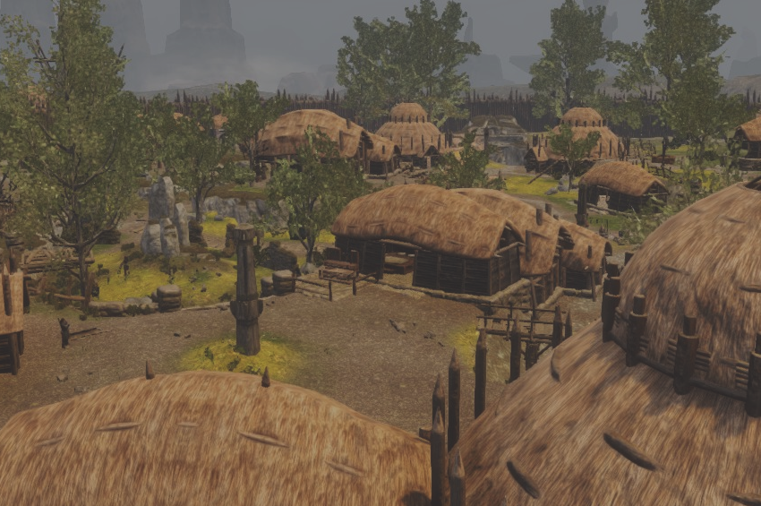
Cidadela
Os Nove Dedos decidem aumentar as escavações de sua cidade subterrânea, aumentando os esconderijos e o comércio secreto de Mors. Oito votos a favor, um contra. Os Nove Dedos decidem que Aghell Greyll é considerado um desertor por seu uso de recursos para ajudar a Ordo Magis. Ele e boa parte dos membros de seu grupo serão desligados da Obscuriati e os que restarem serão vigiados de perto. Seis votos a favor, dois contra e uma isenção. Os Nove Dedos proclamam que serão colocados espiões para centralizar o mercado dos ladinos nas mãos da Obscuriati. Nenhum vendedor clandestino, contrabandista ou ladrão está livre de comercializar sem ser sob os olhos que vigiam nas sombras de Mors. Oito a favor, uma contra. Os Nove Dedos iniciam a criação dos Ankori artificiais. Essa nova força de batalha ajudará no embate contra inimigos cada vez mais poderosos que cercam nossos domínios. Unanimidade de votos. Os Nove Dedos decidem auxiliar lady Volektra, a Rainha dos Meio-Dragões, em sua busca por seu filho. Dizem que a recompensa vale muito a pena. Os recursos estão cada vez mais escassos.
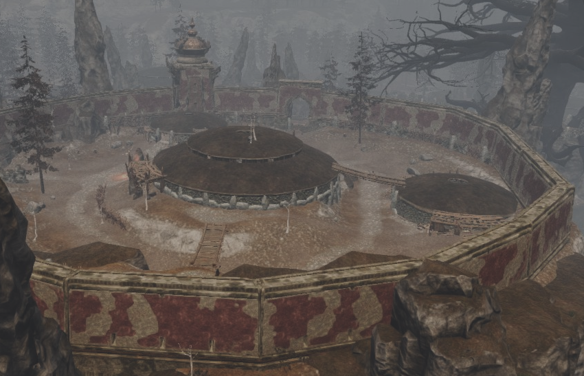
Mors
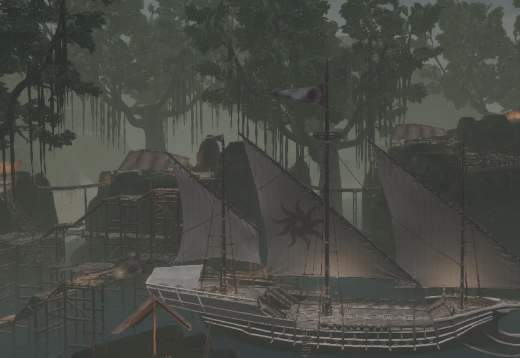
Grande Bosque
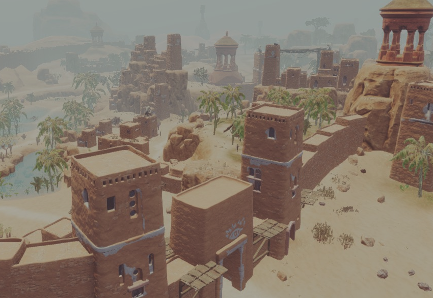
Celestia
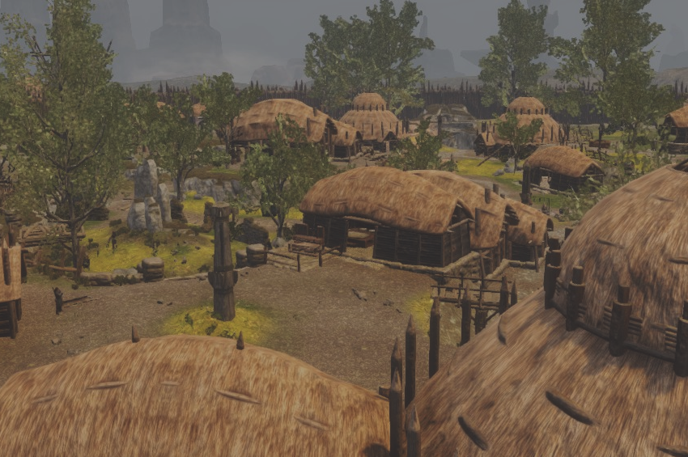
Cidadela
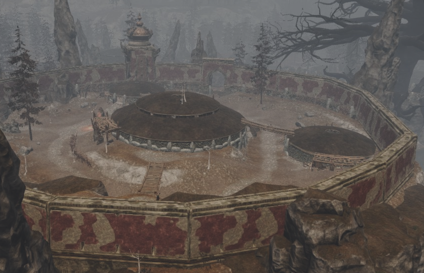
Mors